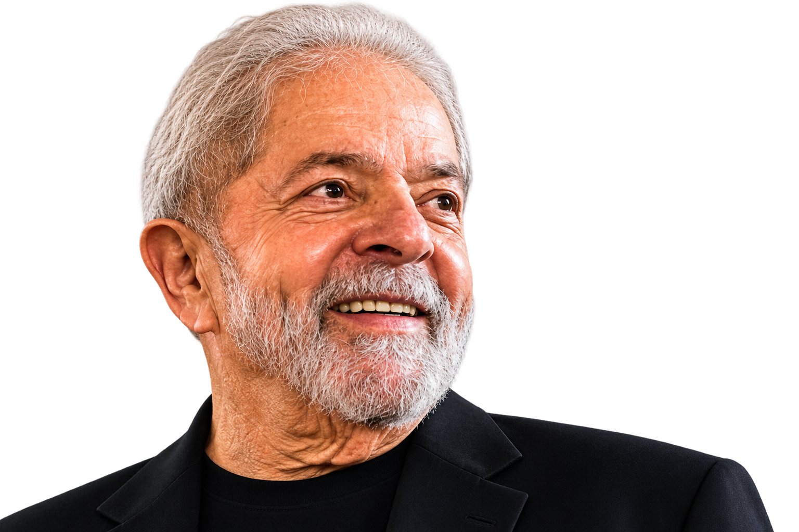
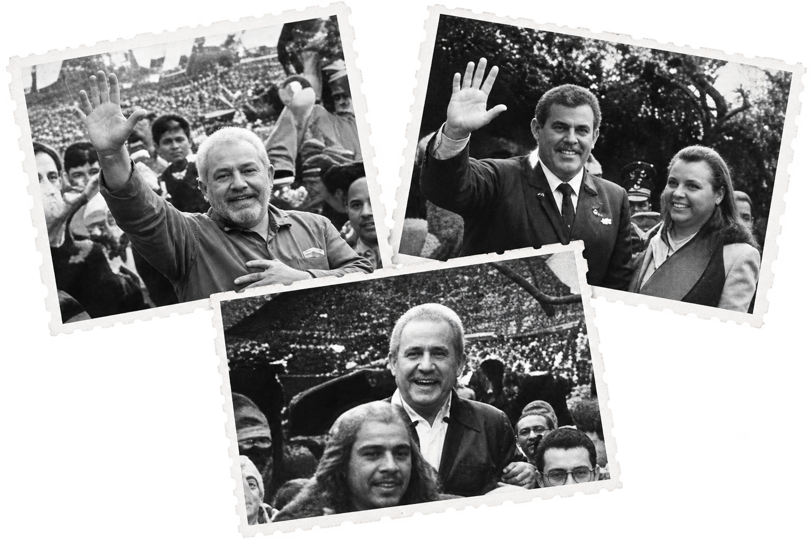

DIÁLOGO
Acredita na conversa
como caminho para
construir pontes.

Frases que revelam seu jeito de pensar,
de governar e de se comunicar com o Brasil.
Acredita na conversa
como caminho para
construir pontes.
Defende um Brasil forte,
respeitado e dono do
seu próprio destino.
Trabalha por um país com
oportunidades para todos
e justiça social.
Crescimento econômico
com distribuição de renda
e geração de empregos.
Relembre algumas das frases mais marcantes
ditas por Lula durante seus mandatos.
“Era o Serra. Reconhecendo que ele ‘perdeu’,
e que eu venci”
“Todo mundo tem o direito de ser contra,
a favor ou muito pelo contrário”
“Está nervoso o mercado? Eu não estou,
estou calmo”.
“O governo tenta fazer o simples,
porque o difícil é difícil”.
“Vocês não sabem o que é urucubaca”.
criticando quem torce para as coisas não darem certo no país.“Não acredito que a gripe venha para o Brasil.
Estamos muito distantes do centro das aves
migratórias. Mas... sempre tem uma ave peralta...”
“Homens e mulheres da Bolívia!”
discursando na Venezuela.“Como o Brasil está nu, ITU, coloquei um
médico pra ser ministro da Fazenda”
“Por muitos anos o Brasil não pode conversar
com a Líbia porque os americanos não gostavam
dos líbios”
“Minha mãe era uma mulher que
nasceu analfabeta”
“Eu sou um homem de fé. De tanta fé
que sou corintiano”.
“Estou pronto para a briga.
Também vou entrar no tatame”.
“O salário mínimo nunca será ideal
porque ele é mínimo”
“Não será por falta de lealdade aos princípios que
nos fizeram chegar à presidência que não iremos
cumprir. Se a gente não cumprir é porque teve
fatores extraterrestres que não permitiram que
nós cumpríssemos”

CONHEÇA SUA TRAJETÓRIA →